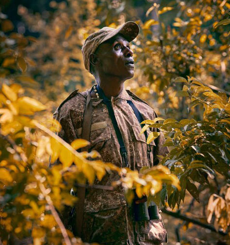

NATIONAL GEOGRAPHIC
How locals are protecting the wildlife of the Queen Elizabeth Conservation Area
TRAVEL
- 
Pelicans preen and glide. Jacana birds, precise as ballerinas, point their improbably elongated toes. Pied kingfishers flit in and out of their lakeside nest holes, saddle billed storks patrol the grassy banks and skimmers speed across the silver-blue water, scooping up beakfuls mid-flight. Everywhere I look, there are birds in abundance. The safari boat is the perfect platform from which to watch: open-sided, smooth and near-silent.
Southwest Uganda’s Kazinga Channel is south of the Equator, but only just. On the journey here, I passed from one hemisphere to the other, pausing at zero degrees to take photos and hear the cheerful patter of a roadside opportunist with a pair of painted funnels, one on either side of the line. With practised sleight of hand, he poured water into each. Down it swirled, clockwise in the north, anticlockwise in the south. “It’s the Coriolis effect!” he declared.
Now, as I putter along the channel, it’s my mind that’s spinning. Like a theme park stocked with flocks of animatronics, it’s all too perfect to be true. But on this squiggle of fresh water, roughly 22 miles long and 2,500ft wide, there’s no trickery: it’s a naturally magical spot. “Often, we’ll spot 60 or 70 species of bird on a single excursion,” says Yasin Mubiru, my softly spoken skipper for the afternoon, who lives locally and knows the channel’s natural history inside out.
Many of the birds are so unfazed by our approach that there’s barely any need to reach for my binoculars, and the Kazinga Channel is so calm, you could count the ripples. Though officially a river, its flow is almost imperceptible. Lying within the Albertine Rift, the 750-mile arc of lakes and mountains that separates Uganda, Rwanda, Burundi and Tanzania from the Democratic Republic of Congo, the channel connects two natural basins at a near-identical altitude Lake Rutanzige (also known by its colonial name, Lake Edward) and Lake Katunguru (also called Lake George). Together, they provide year-round water for the forest-scattered grasslands that surround them: the Queen Elizabeth Conservation Area (QECA), Uganda’s most biodiverse protected zone.
The channel bisects this area’s core: the 764sq-mile Queen Elizabeth National Park (QENP). Bird-wise, it’s booming. Though smaller than East Africa’s blockbuster safari destinations Kenya’s Maasai Mara or Tanzania’s Serengeti QENP harbours considerably more avian species: over 600, in fact, a number that, according to BirdLife International, no protected area in Africa can beat. A relaxed and accessible wildlife haven, it also has low-cost entry fees, friendly guides and an excellent mix of places to stay, ranging from bare-bones accommodation to eco luxury lodges. If you’re fairly new to safari and have a budding interest in birdwatching, it’s the ideal choice.
Yasin hails from the village of Kazinga, a fishing settlement at the Rutanzige end of the channel. We ease round a bend to a spot where Kazinga’s barias (fishermen) have hauled their slender wooden boats onto the shore. In the many African parks and reserves where settlements are banned, this would be incongruous, but QENP is different: it’s part of a UNESCO Biosphere Reserve where rural communities, visitors and wildlife coexist. When the park was created in 1952, its dozen or so villages remained, their residents scratching a living by growing bananas, tending smallholdings and fishing for ngege (Nile tilapia, delicious grilled) or emamba, emale and semutundu (lungfish, mudfish and catfish). Over time, the park’s population has grown.
Protecting forests
Mountain gorillas are the country’s star wildlife attraction, but they are particularly vulnerable. Their stronghold, Bwindi Impenetrable National Park, is in the highlands around 30 miles south of QECA’s southern tip. Like all great ape habitats, this rainforest feels uncompromisingly wild. In reality, however, it has a fragility that keeps conservationists awake at night.
This year, it’s three decades since Uganda Wildlife Authority (UWA) rangers began leading tourists on mountain gorilla-tracking expeditions in Bwindi. UWA partners with local communities in protecting the forest and its gorillas from threats such as mining and logging as well as snares, which are intended for bushpigs and antelopes. Due to the rangers’ diligence, Bwindi’s gorillas increased in number from 300 in the 1990s to 459 in 2018. But there’s still much to be done.
Comments :
- john Very good
- john Very good
Leave a Reply
Your email address will not be published. Required fields are marked*
Related posts:
-
 Along Hadrian’s Wall, ancient Rome’s temples, towers, and cults come to life
Along Hadrian’s Wall, ancient Rome’s temples, towers, and cults come to lifeHadrian’s Wall once marked the extent of the Roman empire in Britannia. Now it’s a pitstop on the way to Scotland’s capital, Edinburgh, or the country’s largest city, Glasgow. Things have changed over the past two thousand years.
View article -
 Why Laos thinks this serpent god deserves UNESCO status
Why Laos thinks this serpent god deserves UNESCO statusIn Laos, a legend holds that a handsome half-serpent, half-human water spirit known as a naga lures a beautiful weaver to be his bride in the depths of the Mekong River. Although you’ll see this dragon-like god
View article -
 These frescoes shattered conventions in the Italian art world
These frescoes shattered conventions in the Italian art worldWhen visitors look up at the ceiling of the Scrovegni Chapel in Padua, Italy, they often suddenly fall silent. Painted above are the golden stars and the enchanting blue skies of a heaven envisioned by the Renaissance
View article